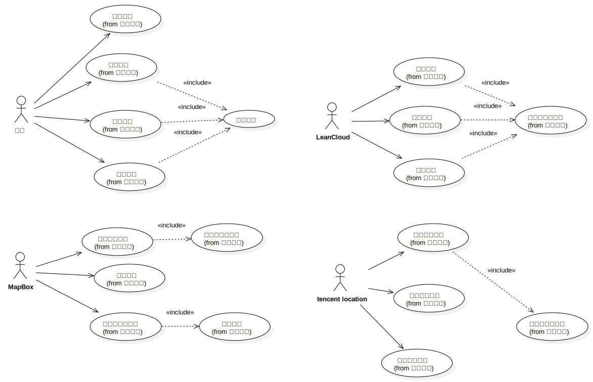
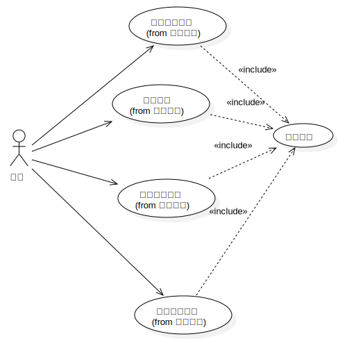
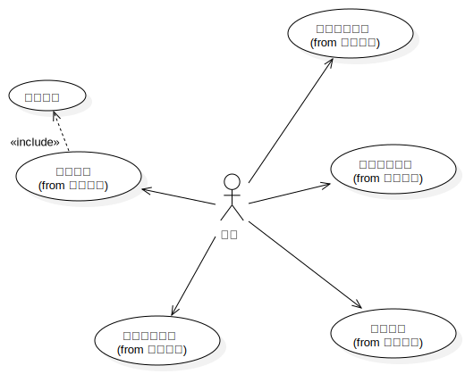
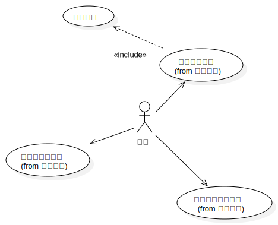
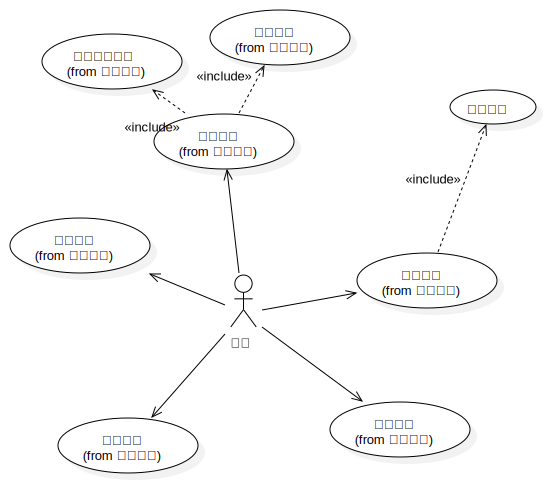
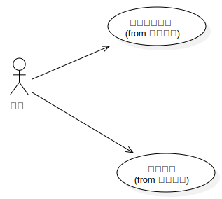

Use Case Model
UMLModel
«useCaseModel»
PlanAssistant
::
«useCaseModel»Use Case Model
Description
none
Diagrams

Main

个人地图

轨迹记录

精力曲线

日程管理

室内导航
Properties
Name
Value
name
Use Case Model
stereotype
useCaseModel
visibility
public
importedElements
viewpoint
Owned Elements
Main
用户
轨迹记录
个人地图
日程管理
精力曲线
MapBox
地图服务
数据服务
LeanCloud
个人地图
轨迹记录
精力曲线
日程管理
tencent location
定位服务
室内导航
室内导航